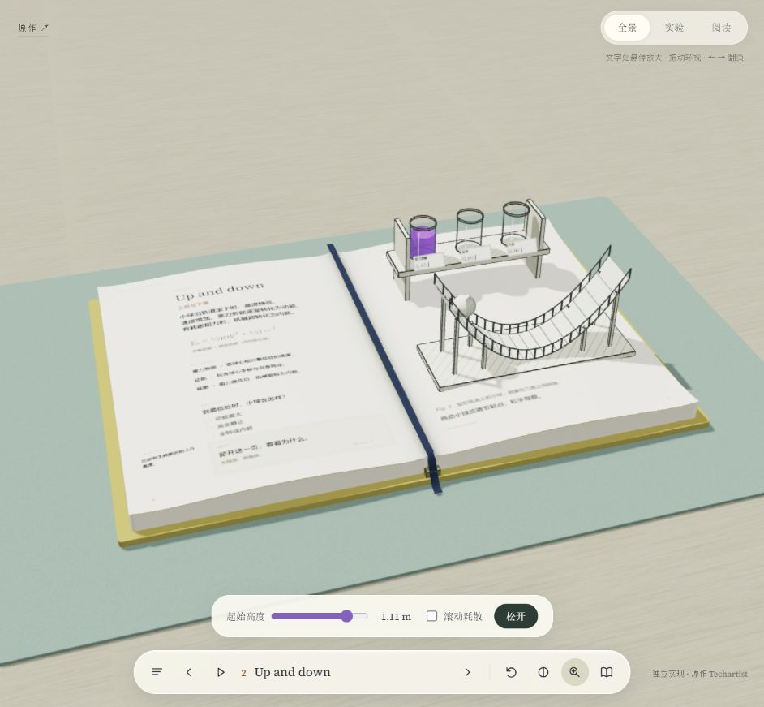
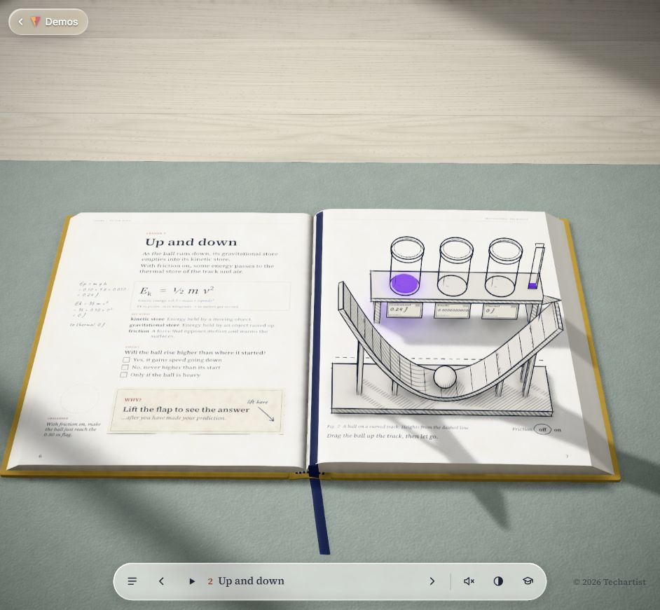
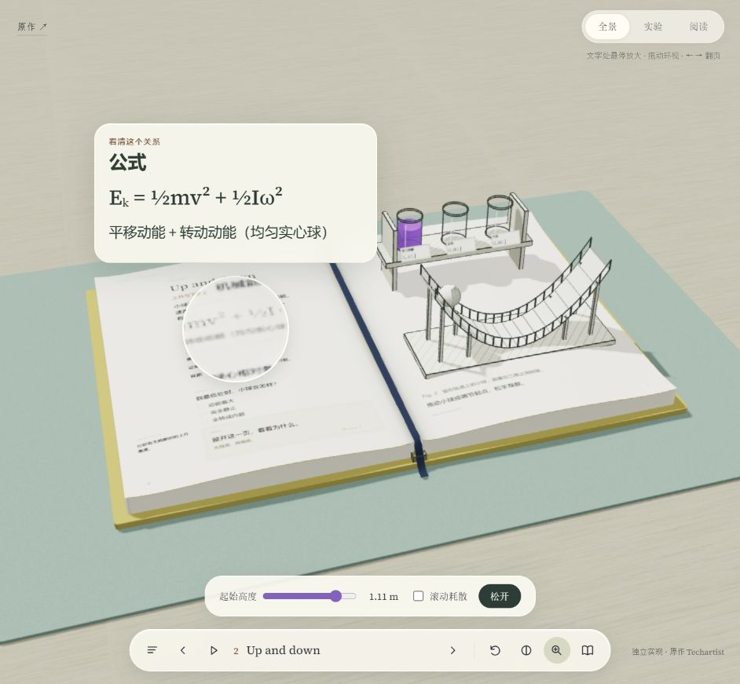
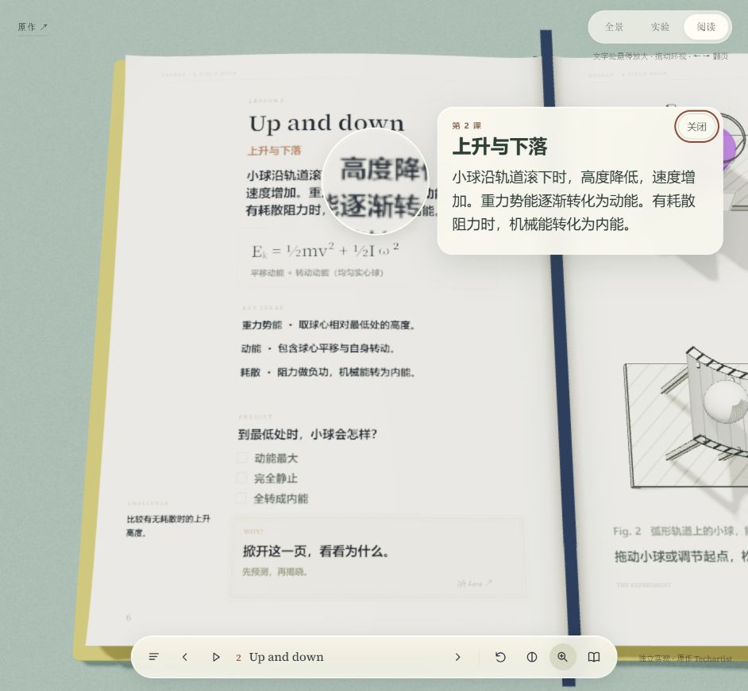
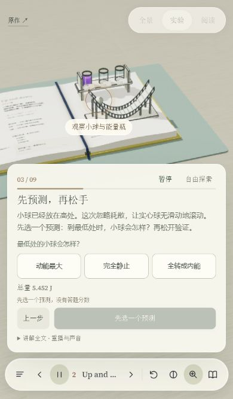

V4.3 · 当前版本复查 · 2026-10-26
把阅读、实验与导演连成一次完整体验。
v4.4已落实本报告中的当前段落固定、连续阅读、小屏阅读空间与状态恢复，见最新验收记录。下方截图和问题保留为v4.3历史审查，其他扩展仍是后续建议。
三维书本、实验、MiniMax讲解和文字放大镜已经能配合运行。下一轮最有价值的工作是减少阅读与操作之间的中断，再精修纸本真实感、实验解释和挑战反馈。
范围：当前独立三课样章，重点第二课的全景、公式阅读、M键固定阅读、390×667预测页与阅读共存。使用实际浏览器截图、DOM尺寸与代码检查；本轮没有修改应用行为。所有本地截图均在本次审查重新采集并打开检查。
优先顺序
| 优先级 | 先做什么 | 做完应看到什么 |
|---|---|---|
| 先修 | 小屏阅读与导演切换显示 | 正文不再挤进约80px的小窗口；返回后保留刚才的预测、暂停点和讲解位置。 |
| 先修 | 固定当前段落、连续阅读 | 在公式上按M仍是公式；上一段／下一段可完整阅读本页，键盘和触屏都不依赖重新定位细小印刷区。 |
| 随后 | 可读性与纸本细节 | 纸面印刷更清楚，瓶签近景可读；书脊、页边厚度、翻盖接触阴影、翻页弯曲与落纸节奏更自然。 |
| 随后 | 按内容点播、实验对象联动 | 点一段即可听相应讲解，镜头与高亮指向该段说的对象，退出后明确“继续刚才的讲解”。 |
| 随后 | 计算展开与两次实验对照 | 高度／速度／压缩量能代入公式；无耗散和有耗散、不同起点或压缩量的结果可放在一起比较。 |
| 完成基准页后 | 进度、印章、章节索引与内容配置 | 知道读到哪、做过什么；章节导航带学习状态。把成熟的一页规则用于后续章节和其他主题。 |
STEP 1 · 可用，需精修
全景与原作对照
三维空间关系、书页厚度和立体器材已成立。当前全景的中文小字和瓶签偏淡、偏小，阅读需要依赖放大镜；原作与本地的模型轮廓、光照、纸面层次仍有明显差异。原作使用正面视角，本地保留用户此前要求的斜侧视角，不能把二者角度不同直接判成错误。
建议先为第二课建立一致的全景／阅读／实验基准：保证器材和文字各自清楚，再细调书脊弧度、翻盖贴合和接触阴影。可读性优先于增加纸纹。


STEP 2 · 核心功能可用，有操作限制
公式放大
公式卡能显示正确的公式与解释，圆镜采样实际书页，画面未跳走。代码检查同时确认：悬停卡无法接收滚动，滚轮会落到画布并关闭卡片、缩放镜头。长内容如果被限高，悬停方式没有直接的阅读完毕路径。
建议提供“固定这一段”，固定后可滚动，并加入公式含义、变量、单位和当前实验数值的逐层展开。

STEP 3 · 已确认体验缺口
从公式按M固定阅读
实际操作顺序为“公式卡可见 → 按M”。固定卡变成章节导语，未保留正在看的公式，还会切换阅读镜头。固定卡没有上一段／下一段或分区目录；当前只有关闭按钮，也没有“听这一段”。
建议默认固定刚才的内容；没有当前内容时再进入导语。补上连续阅读与按段点播。预测选项目前是只读列表，后续应允许直接在固定阅读中作答，解释仍遵守揭盖规则。

STEP 4 · 可完成预测，画面与控件偏拥挤
390×667矮屏预测页
从第二课进入导览，正确到达本课预测段；不是强制从第一课开始。问题、三个选项与下一步状态清楚。导演卡高度315.44px，约占视口47%；实验装置只剩较小的上方区域。字幕12px，暂停按钮约34.67×28px，底栏放大镜约32×34px，触摸舒适度仍需改进。
建议把预测选项、当前一句讲解和展开全文分层呈现，扩大重要按钮的点击区域，减少同屏重复信息。这里尚未做WCAG对比度计算，视觉偏淡与小目标属于风险观察。

STEP 5 · 优先修正阅读空间
导演暂停时打开大字阅读
暂停、关闭与恢复都能工作，稳定后没有挡住主要按钮；但避让算法把固定阅读卡压到79.56px，内部正文总高度163px。结果是标题占去大部分空间，正文只能在狭小区域里滚动。此前较短讲解卡的验收不能代表这个预测页组合。
建议窄屏进入阅读时暂时收起导演卡，以同一个面板切换“阅读／讲解”，保留“返回刚才的讲解”入口。不要只靠进一步缩小字体、圆镜或卡片来塞下更多层。
再补哪些能力最有价值
- 解释过程可视化：已有逐句镜头和对象高亮，下一步在少量关键时刻加入导槽剖面、受力／速度箭头、轨迹与局部慢放。新增表现必须对应现有计算，避免让装饰暗示额外的力或能量。
- 有过程的计算：显示当前条件、代入值与单位；选择变量时高亮相应物体。把静态公式变成“为什么是这个数”的解释。
- 挑战与对照：保留A/B两次实验的起点、阻力、最大高度和能量变化；设置一个可观察的目标，并给出成功原因、失败原因与重试入口。
- 轻量声音：翻页、掀盖、滚动与碰撞的声音随动作触发，独立于MiniMax讲解开关；避免盖过讲解。这里是后续建议，本轮未做声音听审。
- 读过之后能回来：保存章节、预测、挑战完成与阅读位置；目录显示状态，支持清晰重置。此前已有页内完成反馈，不应把它说成完全没有进度表现。
建议先把第二课做成精修基准：读得清 → 固定当前段 → 听这段并看对象 → 改条件做对照 → 收到解释 → 回到原位置。走通之后再扩充课程与通用内容配置。